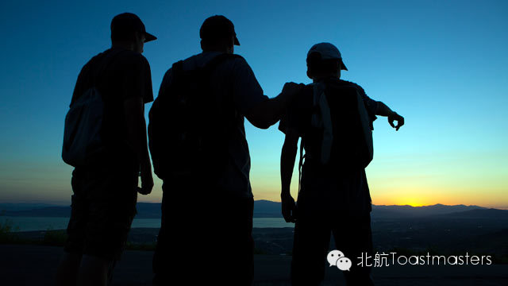
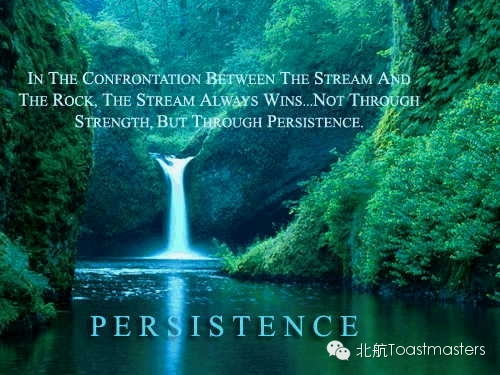
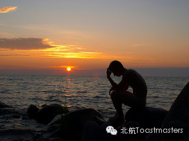
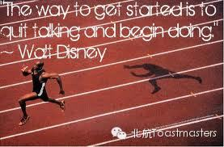

Venue: Room A212, New Main Building, Beihang University

Toastmaster: Keven
General Evaluator: Peter
Persistence is the quality that allows us to continue trying to do
something even though it is difficult or opposed by other people. We
need persistence in our lives because there are few things that can be
easily done, there are few things that our friends and families are
all supportive. We have to find a way to convince the world that they
are wrong. Dream is beautiful, life is tough, and persistence is the
road to overcome all these pain to realize happiness.
Table Topics

Table Topic Master: Monk
Table Topic Evaluator: Veronica
"In the confrontation between the stream and the rock, the stream always
wins. Not through strength, but through persistence." In fact, we are
acting as "stream" in our daily life. Share your stories without any
hesitation!
Prepared Speech

CC1 Dale
Regretless Life
Do you guys know Dale?
As far as I know, he is a smart, tough, diligent boy. What impress me most is his ability of time management. He gets up at 5 o'clock every morning! I think most of us are not capable of doing that persistently. However, according to his title, he must have some bad days in his life. What did he do to change his life style? Let's find answer and get to know him together!

CC4 Jason
Action Speaks Louder than Words
Our dedicated SAA is working on job searching recently. He must have experienced life outside the campus. Our members form school of foreign languages always tell me that Jason is a motivated student or "学霸". What's his secret? Why is that important to take action? How to complete the transformation form a student to a office staff? Looking forward to Jason's share.
=======================
向还不了解“北航Toastmasters"的朋友们介绍一下：这个组织专注于提升演讲能力和领导能力。每周五19:30在北航新主楼A212举办meeting.
我们欢迎每一个感兴趣的朋友前来做客!
官方微信号： 【 beihangtmc 】
（提示：长按方括号中的微信号可复制，然后在查找公众帐号时，长按输入框即可粘贴微信号）
路线：回复r即可查看路线地图